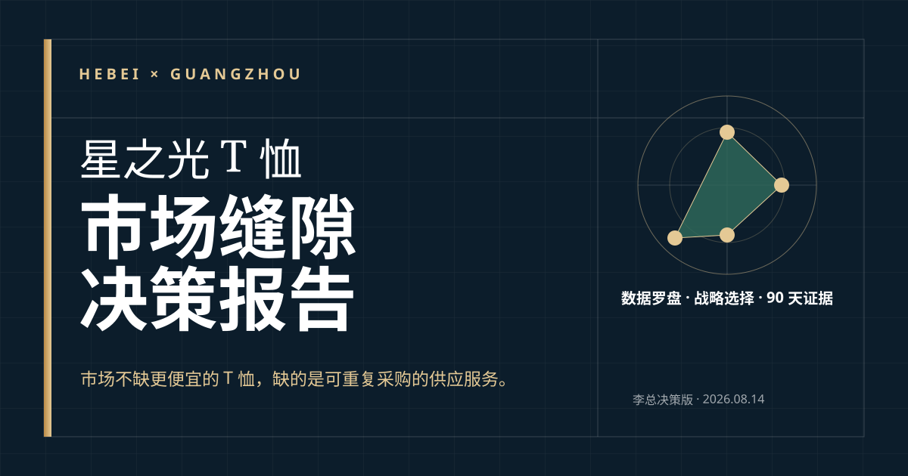
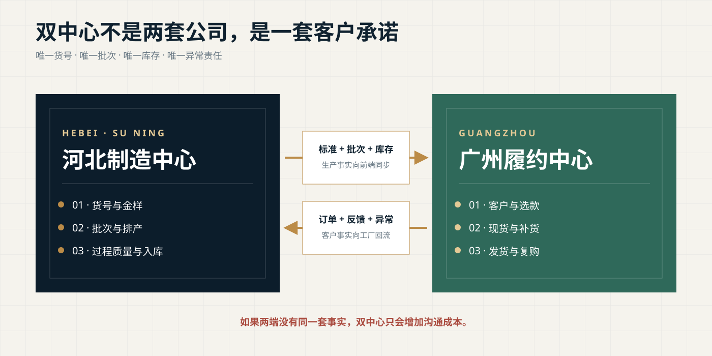
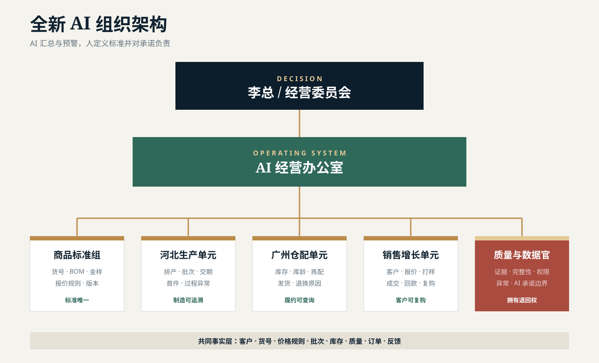

SKU 密度过低
三海鲸 340、欣绣 200、盛元 185；客户选择面先被对手截走。
COMPETITIVE RISK INTELLIGENCE · 2026
星之光不会输在厂房，而会输在 SKU、起订门槛、响应速度和数据透明度。
公开平台快照显示，星之光只有 30 个 SKU、定制 MOQ 1000 件、服务响应率 69%，准时履约字段暂无数据。欣绣、盛元、兰泽、三海鲸已分别在小单、响应、现货和商品密度上领先。必须立刻把河北自营工厂、广州自有仓库、广州销售团队变成可验证的经营系统。

RED ALERT
老板先看这一页
竞争对手不一定拥有更大的厂房，但正在用更多 SKU、更低试单门槛、更快平台响应和更清晰的货号抢走客户入口。
三海鲸 340、欣绣 200、盛元 185；客户选择面先被对手截走。
欣绣 1 件、三海鲸 5 件、佳绒 50 件；小 B 和跨境试单进不了门。
盛元 97%、兰泽 99%、三海鲸 92%；这组数是服务响应率，不是履约率。
星之光的准时履约字段暂无数据，不能向客户证明稳定交付。
针织出口数量增长 3.9%，单价下降 7.9%；靠低价扩量会进一步压缩利润。
停止用“大厂房”代替竞争力解释；建立每周竞争对标表。
30 天内上线两条英雄货号和 50 / 200 / 1000 三档起订试验。
把询盘响应、准时履约、复购、贡献毛利和库存周转设为老板驾驶舱五项硬指标。
MARKET RISK COMPASS
市场风险数据罗盘
2025 年服装及衣着附件出口额下降，外需总盘承压。
主要品类中，针织 T 恤出口金额降幅明显。
针织服装出口平均单价同时下降 −7.9%，多卖不等于多赚。
规上服装企业营业收入利润率只有 4.05%，价格战容错极低。
2024 年快递发单量预计近 2 亿单，竞争已经是高频、透明、可替换。
肃宁拥有密集供给，但大型 T 恤企业为 0；领先者取决于运营系统，不只看厂房。
出口金额下滑、数量仍增、单价下降。
线上化高、供给密、价格与服务透明。
SKU 少、MOQ 高、响应偏慢、履约证据缺失。
厂房优势无法自动转化为订单优势。
因此星之光不能只做传统 1000 件以上大货，也不能无成本地降到 1 件起订；正确做法是用分层 MOQ 承接试单，用英雄货号和广州仓承接复购，用真实履约数据决定扩张。
可用于市场规模、政策方向和行业趋势，但仍需注明统计范围与时点。
1688 的 SKU、MOQ、面积和人数只代表页面展示，不等于审计数据。
约 20 年经营积累、自营工厂、自有仓库、销售团队与旧货号资产，需由李总确认当前有效版本。
responseRate 是服务响应率，protectionRate 才是准时履约字段。星之光页面中服务响应率为 69%、回头率为 82%，但星之光暂无准时履约数据。平台调研包覆盖 23 家可见样本，属于固定样本，不是全量普查。
COMPETITIVE BENCHMARK
七家同口径对标
公开肃宁纯 T 样本中厂房面积较大，自报年交易 2000 万以上。
只有三海鲸的 8.8%，只有欣绣的 15%。
欣绣 1 件、三海鲸 5 件、佳绒 50 件。
服务响应率低于盛元 28 个百分点、兰泽 30 个百分点。
SKU 多不等于利润高，但代表搜索入口、客户选择面和现货组织复杂度。
MOQ 低不等于更先进；关键是能否覆盖拣货、打样、沟通与退换成本。
69%、97%、99%、92%均为平台 服务响应率，不是准时履约率。
只有平台 `protectionRate` 字段进入准时履约列；星之光和三海鲸目前暂无数据。
OVERTAKE WARNING
谁最可能超越星之光
P0 = 至少三个关键维度领先且客户切换成本低；P1 = 两个关键维度领先，或增长 / 渠道动作明确。
对手正在做什么
用一件代发和多克重现货扩大询盘入口，再从零售 / 小 B 订单筛出批量客户。
星之光风险：试单客户根本进不了 1000 件门槛。自报 10 万件现货，叠加快反、贴牌和设计服务，降低客户压货风险。
星之光风险：大厂房有库存，却没有可查询的现货承诺。现货仓储、快速打样和电商 / 直播是一套连续动作，不只是挂“支持直播”标签。
星之光风险：新厂用新渠道缩短追赶周期。340 SKU + 5 件起订，用近客库存吃掉临时单、补单和小批量客户。
星之光风险：广州资产没有变成前台商品能力。K2301、K77000 等货号把 180—300g 产品变成可搜索、可记忆、可复购的链接。本地快照记录单链 1172 / 935 / 563 笔，采买前仍需复核实时页面。
星之光风险：客户记住 K 货号，记不住“某厂某克重”。AG180—280 把克重、版型和补货预期做成产品语言，海外印花店可直接理解。
星之光风险：2023 年已有货号资产，2026 年却没有形成持续标准。COUNTERATTACK
星之光如何反击

C 自营工厂，拥有产业带配套。
规格、产能、批次与交期没有统一公开口径。
先做标准，不先加设备C 自有仓库，靠近客户与销售。
库存、库龄、批次与可售状态需统一。
建立 SKU × 批次台账C 广州销售团队。
客户需求与工厂语言没有统一翻译层。
用标准报价与 CRM 承接C 2023 年内部资料已有 01OA1 等产品编号。
旧货号是否在售、规格是否冻结待确认。
保留资产，重新验真C 企业经营积累约 20 年。
经验沉在个人与旧文档，无法规模复制。
固化成标准与例外库主体名称与合同口径、产能与可承诺交期、广州库存与真实可售数量必须形成唯一版本。它们没有唯一版本时，任何 AI 看板都会把冲突放大。
MARKET GAPS
从竞争差距反推市场缝隙
复活 01OA1 等旧资产，冻结 180g 与 230g 的规格、金样、颜色和变更规则。
用 50 / 200 / 1000 三档验证真实作业成本，不盲目跟进 1 件起订。
同一 SKU、批次和库存台账，让广州销售可以当场查货、报价和承诺。
同货号下次仍是同样手感、缩水、色差和印花表现，异常有责任人和证据链。
为选款、印花测试和客户确认服务；价格覆盖拣货、包装与沟通成本。
广州仓按标准箱 / 标准包快速响应；只承诺真实可售库存。
河北工厂按冻结规格生产；交期、损耗、质检与异常规则写入订单。
RISK & KILL SWITCH
竞争风险与止损
低价获客后，拣货、补货、退换和沟通成本吞掉利润。
SKU 扩张快于复购，广州仓变成滞销品仓。
同货号不同手感、缩水或色差，会直接摧毁复购。
销售承诺、仓库库存和工厂交期各说一套。
平台自报、内部口径和官方统计混为一谈。
AI 把旧价格、错误库存或未经确认的交期发给客户。
AI OPERATING MODEL
全新 AI 组织架构

决定客户、货号、价格边界、库存风险和资源投入；AI 只提供异常与情景。
维护唯一事实层、经营看板、周复盘和权限；不代替业务负责人签字。
货号、BOM、尺码、金样、标签、报价规则和变更记录。
排产、批次、交期、首件确认、过程异常和成品入库。
收货、批次、库存、库龄、拣配、发货与退换原因。
客户分层、选款、报价、打样、成交、回款、复购与丢单原因。
检查数据完整、批次证据和 AI 承诺边界；对不完整订单有退回权。
| 节点 | 人负责 | AI 辅助 | 证据输出 | 禁止事项 |
|---|---|---|---|---|
| 询盘 / 选款 | 销售 | 客户摘要、需求结构化、候选货号 | 客户卡、需求与下一步 | 不得虚构库存和案例 |
| 报价 / 打样 | 销售 + 商品标准组 | 按批准规则生成草稿 | 版本化报价、样品单 | 不得自行改价、账期 |
| 生产 / 备货 | 河北生产 / 广州仓配 | 排产提醒、库存异常 | 批次、数量、计划日期 | 不得用旧库存替代新批次 |
| 质检 / 发货 | 质量与数据官 + 仓配 | 抽检清单、异常归类 | 留样、质检、物流凭证 | 不得跳过证据门禁 |
| 复购 / 复盘 | 销售 + AI 经营办公室 | 复购提醒、丢单与异常聚类 | 客户反馈、改进项 | 不得只汇报成交额 |
90-DAY EVIDENCE PLAN
90 天证据计划
英雄货号数量、MOQ 层级、交期、毛利阈值、库存上限和复购门槛，需在第一个月完成核算后由李总确认。本报告不替企业虚构这些数字。
SOURCE REGISTER
数据底稿
1000 余家纺织服装企业、5 万余人、年销售收入近 200 亿元。宽口径。
针纺服装产值 175 亿元、电商销售 150 亿元、近 2 亿单、线上销售率约 80%。
针织服饰超 10 亿件、圆领文化衫全国约 70%、年销售额 140 亿元、就业 5 万余人。
各类针纺经营主体 1200 余家、年产可达 10 亿件；“可达”按产能理解。
产业集群工作方案：前店后厂、电商融合、跨境出海、入园升规和公共服务。
2025 年服装出口 1511.8 亿美元、下降 5.0%；针织 T 恤出口金额下降 8.9%。
针织服装出口数量增长 3.9%、单价下降 7.9%；规上服装企业利润下降 27.34%，收入利润率 4.05%。
肃宁纺织服装线上销售率 80%；截至 2024 年 10 月发单量 1.6 亿，全年预计近 2 亿单。
30 SKU、MOQ 1000、服务响应率 69%、回头率 82%；准时履约字段暂无数据。
200 SKU、MOQ 1、员工 117 人，多克重现货和一件代发。
185 SKU、服务响应率 97%，自报 10 万件现货与柔性快反。
134 SKU、服务响应率 99%，描述从线下转向电商 / 直播和现货仓储。
175 SKU、服务响应率 85%，平台档案始于 2022 年。
340 SKU、MOQ 5、服务响应率 92%、回头率 83%；广州现货模型。
535 SKU、3 万㎡、259 人、MOQ 50；用作河北规模型战略参照。
自营工厂、自有仓库、销售团队、经营年限与旧货号资产均为内部口径，正式实施前由李总确认。
1688 页面存在商家自报、字段改版、抓取范围有限和重复主体等限制。本报告不声称完成 1688 全站爬虫，也不把平台 GMV、人数、面积或成交笔数当作工商、税务或审计结论。